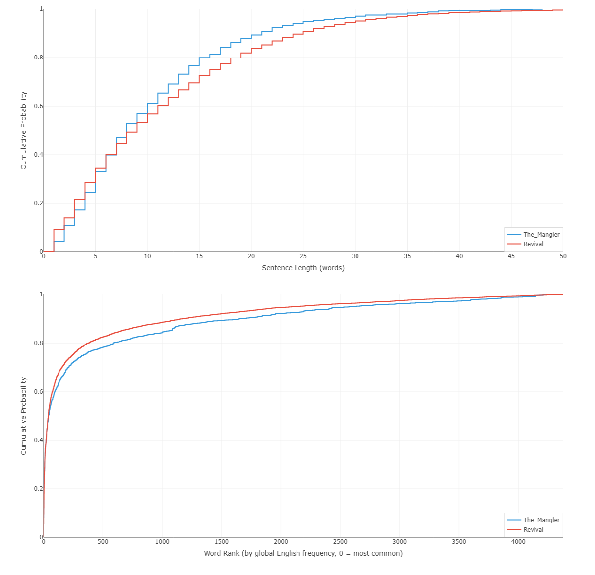

如何解读两张图表？
将你的文本通过写作风格分析器运行后，你会看到两张图表。它们实际上告诉你什么？简短的回答是：它们通过比较变得有意义。以下是三个说明如何阅读它们的对比案例。
同一位作者，不同作品

上面的图表叠加了欧·亨利的几篇短篇小说。这些曲线紧密地聚集在一起——无论是句子长度还是词频。这不是巧合。当同一个人写多个作品时，底层的统计模式往往会趋同。这表明这些图表捕捉到了作者根深蒂固的写作习惯中某些真实的东西——这些习惯作者本人可能从未如此清晰地可视化过。
这是作者身份的证明吗？不是。但它是一个引人注目的指纹。
不同作者

现在比较欧·亨利、斯蒂芬·金和欧内斯特·海明威。曲线以富有启发性的方式分叉。欧·亨利在三人中句子最短——他的句子长度曲线上升得最早。相比之下，海明威是高频词汇的最大用户。他的词频曲线攀升得最快，反映出他致力于使用朴素、日常的语言——这也是他的文笔让人感觉如此直接、易于为广大读者接受的主要原因。你在这些图表中看到的是作家在构建句子和选择词汇方面真实的、可测量的差异。
同一位作者，不同年代

这是斯蒂芬·金相隔42 年的两部小说：《绞肉机》（1972 年）和《重生》（2014 年）。曲线不再整齐地重叠。金的风格发生了变化——他的句子平均变长了，词汇发生了变化。写作习惯不是一成不变的；它们随着年龄、经验和品味的变化而漂移。
这是否意味着他的技艺提高了？退步了？还是仅仅是风格发生了变化？我不知道。也许你已经有自己的想法了。
该比较什么
共同的主线是比较。比较你自己不同时期的写作来看成长。将你自己与你欣赏的作家进行比较。比较不同的体裁、不同的心境、不同的草稿。图表是中立的——它们只是可视化数据。洞见来自你提出的问题。
现在就试试：粘贴你自己两段不同的写作，看看曲线是否讲述了一个故事。
哦，还有一件事——我们在这里完全专注于比较，而没有解释这些图表本身实际上意味着什么。我们会在下一篇博文中深入讨论。不过我想你们中的一些人已经搞明白了。